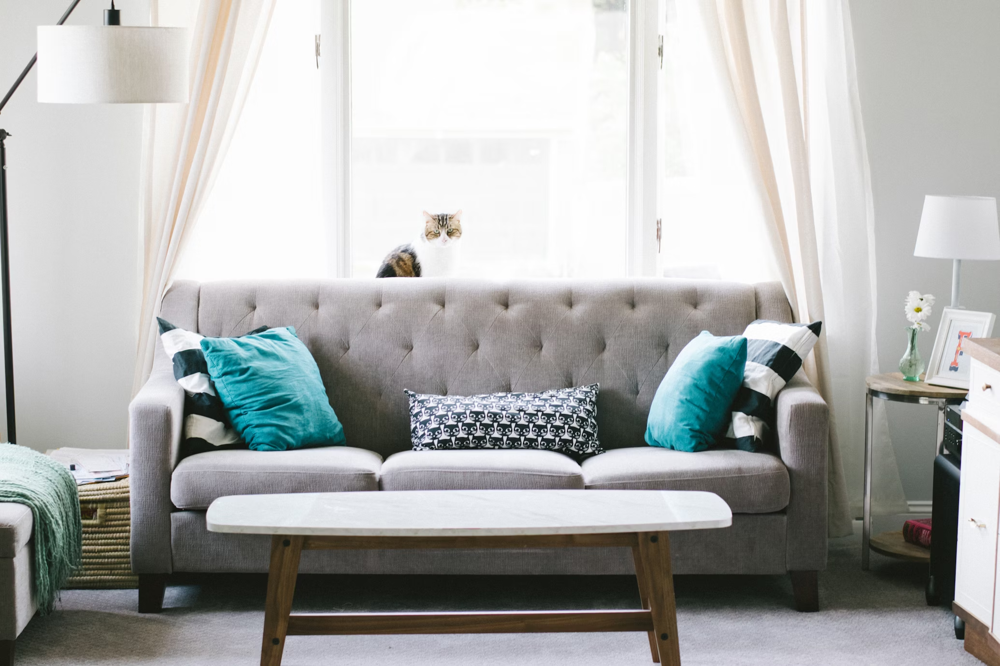

The Ultimate Guide to Choosing the Perfect Sofa for Your Living Room
Find out how to select the ideal sofa that balances comfort, style, and functionality for your living space.
Reading Time: ~4-5 minutes.
The sofa is often the centerpiece of a living room, providing both comfort and style. Choosing the perfect sofa involves considering various factors such as size, material, and design. Here's a comprehensive guide to help you make the best choice for your living room.
-
Consider the Size and Scale
Before purchasing a sofa, measure your living room to ensure it fits comfortably within the space. Consider the scale of the sofa in relation to other furniture pieces and the room's overall size.
-
Select the Right Style
From classic to contemporary, sofas come in various styles. Choose one that complements your existing decor and reflects your personal taste. Consider details like arm style, leg design, and back height.
-
Choose a Durable Fabric
The fabric of your sofa should be both durable and comfortable. If you have pets or children, opt for materials that are easy to clean and resistant to stains. Fabrics like microfiber, leather, and performance fabrics are excellent choices.
-
Test the Comfort
Comfort is key when choosing a sofa. Test the sofa's cushions and seat depth to ensure it meets your comfort preferences. Consider whether you prefer a firmer seat or something softer and more plush.
-
Think About Functionality
Consider how you will use the sofa. Do you need a sleeper sofa for guests? Would a sectional better suit your space? Think about the sofa's functionality and how it will fit into your daily life.
-
Pay Attention to the Frame
A sturdy frame is essential for a durable sofa. Look for frames made of hardwood, which offer strength and longevity. Avoid frames made from particleboard or plastic.
-
Evaluate the Cushion Fill
Cushion fill affects the sofa's comfort and longevity. Options include foam, down, or a combination of both. Foam provides firmness and support, while down offers a soft and luxurious feel.
-
Choose the Right Color
The color of your sofa can set the tone for the entire room. Neutral colors like beige, gray, or navy are versatile and timeless. For a bold statement, consider vibrant hues or patterns.
-
Consider Customization
Many furniture brands offer customization options, allowing you to choose fabrics, finishes, and configurations. Customization can help you create a sofa that perfectly fits your space and style.
-
Set a Budget
Determine your budget before shopping for a sofa. While investing in a high-quality sofa is worthwhile, there are plenty of options available at various price points to suit your needs.
Selecting the perfect sofa is a significant decision, as it will be a central piece in your living room for years to come. By considering size, style, comfort, and durability, you can find a sofa that not only fits your lifestyle but also enhances the overall aesthetic of your home.
More Articles

How to Create a Luxurious Cozy Bedroom
Transforming your bedroom into a sanctuary of luxury and coziness is all about striking the perfect balance between elegance and comfort. A well-designed bedroom is not just a place to sleep; it's a personal retreat where you can unwind and rejuvenate. Here's how you can create a luxurious, cozy bedroom that exudes sophistication and warmth.
Read More
The Art of Minimalist Design: How to Achieve a Luxurious Look with Less
In the world of interior design, minimalist design has gained acclaim for its ability to achieve sophistication through simplicity. Embracing the “less is more” philosophy, minimalist design focuses on clean lines, functional spaces, and a restrained color palette to create a serene and luxurious environment. If you’re looking to infuse your home with a touch of elegance while keeping things simple, here’s how you can master the art of minimalist design.
Read More
Maximizing Small Spaces: Luxury Design Tips for Compact Living
Living in a smaller space doesn't mean you have to sacrifice luxury. With the right design approach, you can create a comfortable and stylish environment that feels much larger than it is. Here are some tips to help you maximize small spaces with luxurious design elements.
Read More